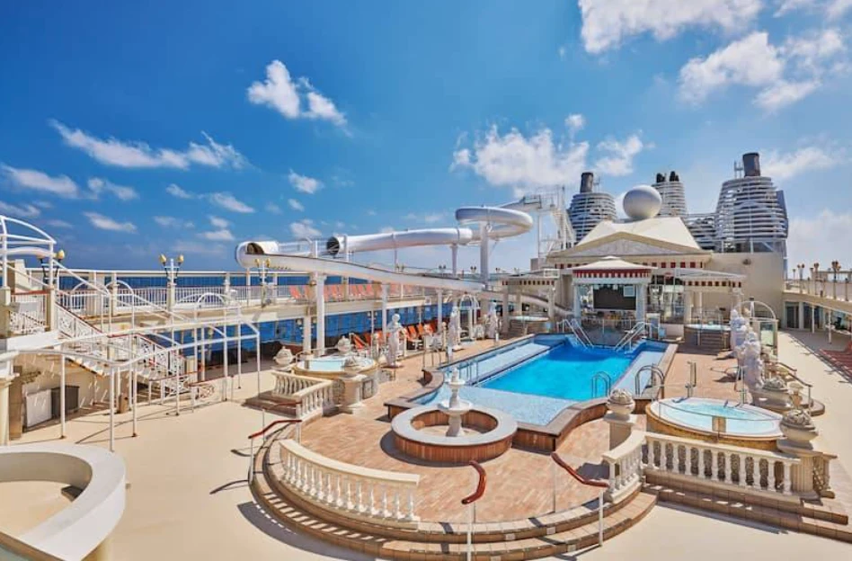
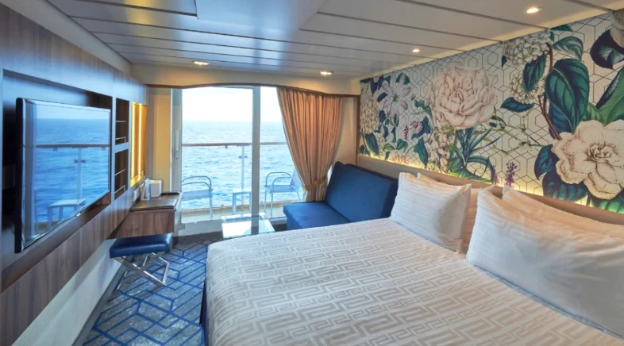
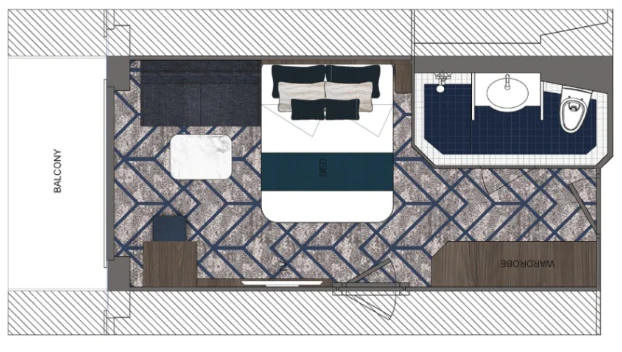
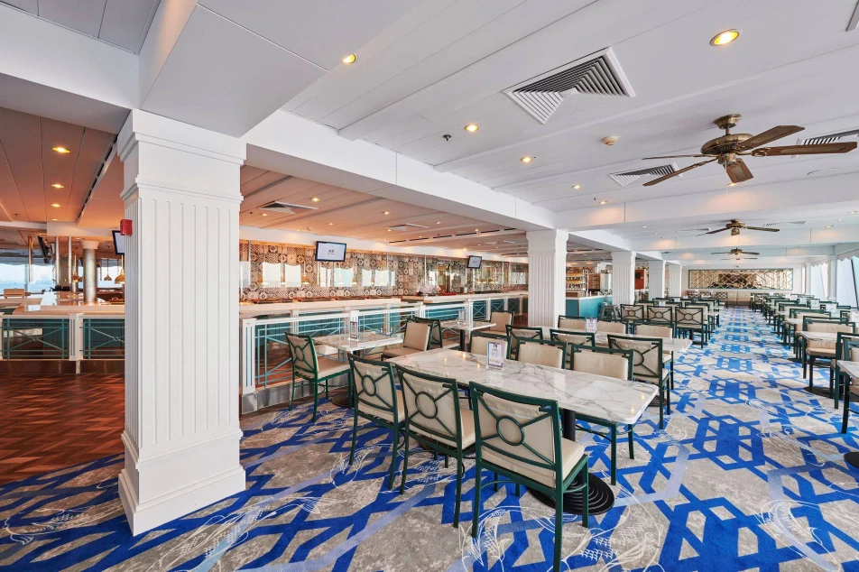
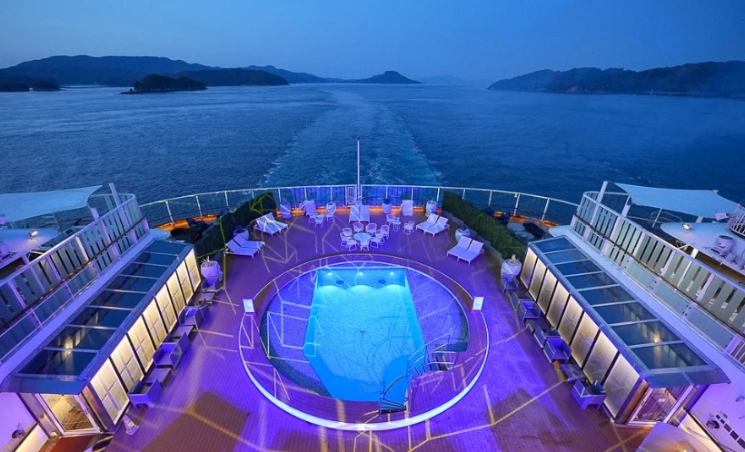
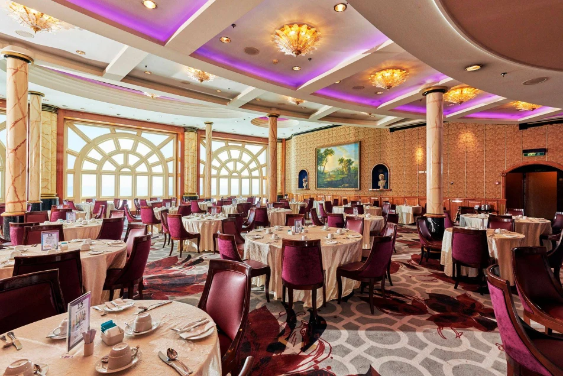
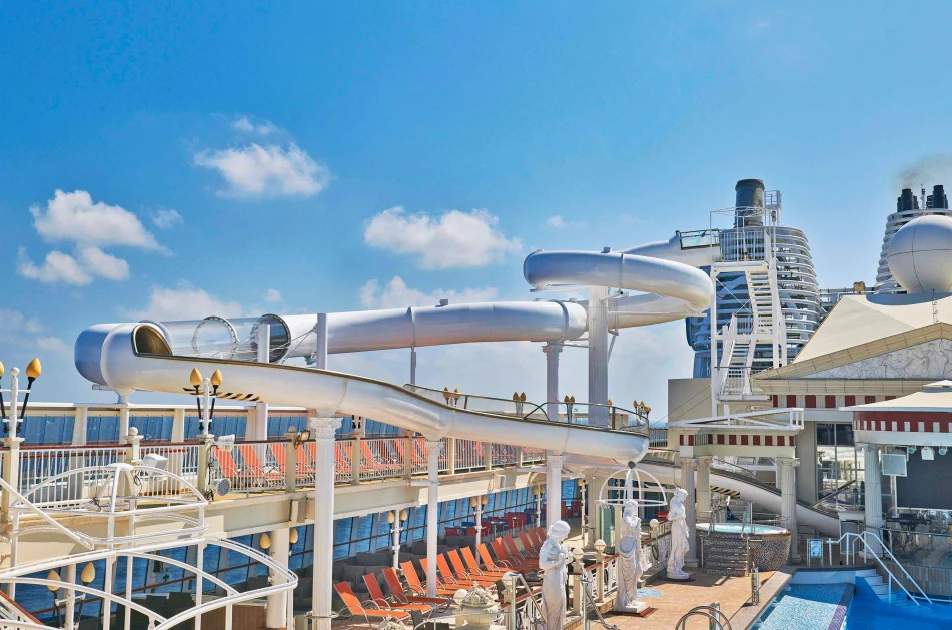
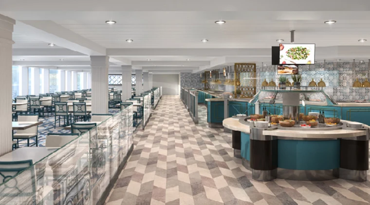
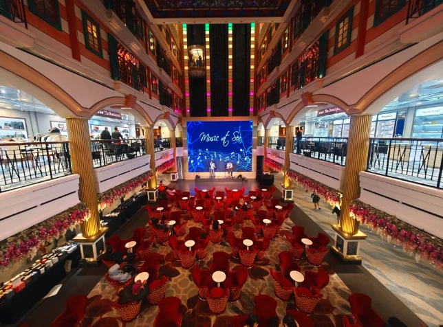
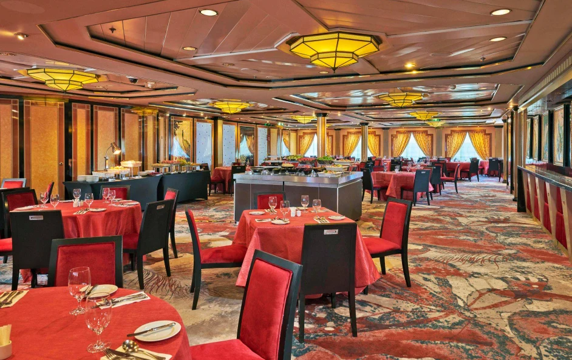

南京東路搭乘公車前往基隆
從台北出發，準備開始三天兩夜的海上假期。

2026.03.27 — 03.29 · 三天兩夜
兩晚露臺客房，把週末交給海風、玩水與船上的夜晚。
麗星郵輪探索星號（Star Navigator），從台灣基隆港出發，前往與那國島附近海域／公海巡遊，最後返回基隆。這趟記錄以船上活動為主，沒有安排與那國島登岸行程。
航線方向示意，不是實際航跡，位置與距離不按比例。
週五晚上開船，週六在船上吃飯、玩水、看表演，週日收拾行李回港。保留原本的時間與旅行口吻，照片依你指定的圖序放入。
星期五 · 台北 → 基隆 → 海上
從台北出發，準備開始三天兩夜的海上假期。
兩晚的海上小窩，有陽台可以吹風、看海。


登船後的第一頓晚餐。

出發啦！去甲板吹海風，鬼吼鬼叫。

喝點小酒，把晚上留給表演。
回到露臺客房，繼續吹風看海。
星期六 · 與那國島附近海域／公海巡遊
睡到舒服的時間，再去吃午餐。

還有差點飛出船外的滑水道！

玩水後再到麗都吃晚餐。

晚上的船上活動。
在大廳坐下來，看表演。

繼續把夜晚過滿。
結束今天的活動，回房看海上的夜景。
星期日 · 返回基隆
下船前的最後一頓午餐。

收拾兩晚的海上生活，準備在基隆下船；未提供實際靠港與下船時間。
登船時間依旅行記錄為 3/27 18:00。晚上的陽台，是吹海風與看海景的地方。
十張圖片均為你提供的照片／客房格局圖，依圖一至圖十對應原記錄；未附照片的活動保留文字紀錄。照片不另推定為當次實拍。最後一天原文「20250329」依整趟日期整理為 2026/03/29；3/27 15:00 空白項目略過。棕梠閣整理為棕櫚閣。
航線參考：永盛旅行社行程連結 ↗ · 五福旅行社行程連結 ↗。實際靠港、航跡與下船時間未補作推定。